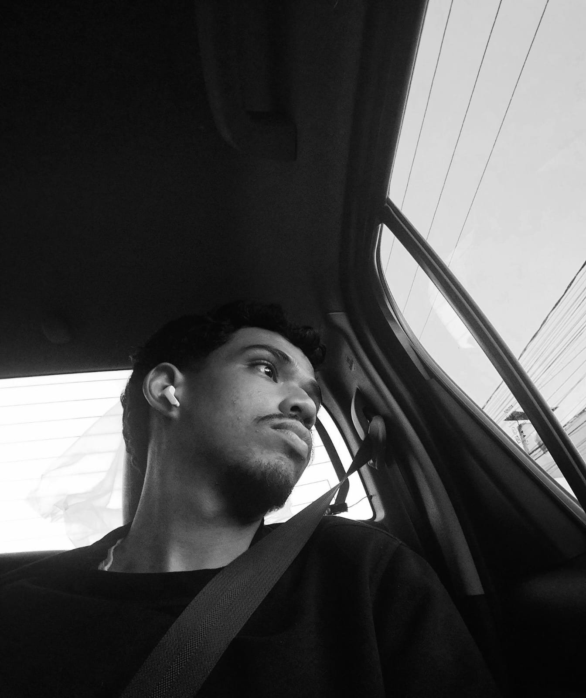

Pedro Matos
Desenvolvedor Front-end no Programa Trilhas
Sobre mim
Olá! Sou estudante de Ciência da Computação na Universidade Federal do Maranhão (UFMA) e Técnico em Informática pelo Instituto Federal do Maranhão (IFMA).
Tenho interesse em desenvolvimento web, programação competitiva e segurança da informação. A programação competitiva aprimora meu raciocínio lógico e minha resolução de problemas, habilidades que levo para a construção de interfaces.
Meu objetivo é transformar ideias em interfaces intuitivas e funcionais que auxiliem toda a sociedade. No Programa Trilhas, estou dando os primeiros passos como desenvolvedor front-end.